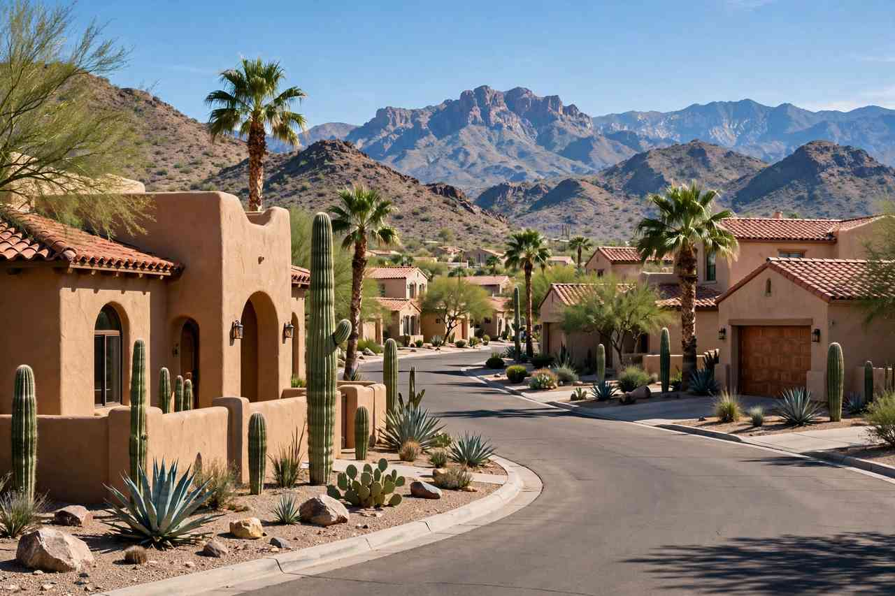

Rodent Control · Goodyear, AZ
Licensed Rodent Control in Goodyear, AZ
Rats in the attic or mice in the kitchen in Goodyear? Murvo provides same-day rodent control with local crews who inspect first, remove the animals already inside, and seal the entry points they used. Every job is quoted flat-rate in writing before work begins and backed by a written guarantee, covering homes and businesses across Maricopa County. Local crews cover 4 ZIP codes in the Goodyear area, from Tolleson to the far side of Maricopa County.
24/7Availability
4ZIP codes covered
Same-dayResponse
Licensed · Upfront options · Written guarantees · Fully insured
Goodyear at a glance
Local Rodent Control for Goodyear, AZ.
Maricopa County
Countycentral Arizona
RegionBuckeye · 20 mi
Nearest metro21 mile southwest of Phoenix
From Phoenix4
ZIP codes covered Service by service in Goodyear
Rodent Control Services Available in Goodyear
Rodent-only specialists serving Goodyear and Maricopa County. Every service below is explained in local terms - the species involved, the entry points that matter in desert-edge single-family homes, historic adobe and older in-town homes, and homes with irrigated citrus landscaping, and the seasonal timing that decides whether a fix lasts.
- 01Rodent Control↗
- 02Rodent Inspection↗
- 03Rodent Removal↗
- 04Rodent Exclusion↗
- 05Rodent Proofing↗
- 06Rat Control↗
- 07Mice Control↗
- 08Mouse Removal↗
- 09Rat Removal↗
- 10Rodent Trapping↗
- 11Rodent Baiting↗
- 12Rodenticide Application↗
- 13Attic Rodent Removal↗
- 14Crawl Space Rodent Removal↗
- 15Wall Rodent Removal↗
- 16Kitchen Rodent Control↗
- 17Garage Rodent Control↗
- 18Commercial Rodent Control↗
- 19Residential Rodent Control↗
- 20Emergency Rodent Removal↗
- 21Same-Day Rodent Control↗
- 22Rodent Damage Repair↗
- 23Rodent Waste Cleanup↗
- 24Rodent Disinfection↗
- 25Rodent Odor Removal↗
- 26Dead Rodent Removal↗
- 27Rodent Dropping Cleanup↗
- 28Rodent Exclusion for Roofs↗
- 29Rodent Exclusion for Vents↗
- 30Rodent Exclusion for Chimneys↗
Rodent Control in Goodyear
Rodent Control in Goodyear
What does a finished job actually look like? No new droppings, no nighttime movement, and no open route back inside. That is the standard Murvo works toward in Goodyear, with background-checked technicians, a written workmanship guarantee, and follow-up checks that confirm the quiet is real rather than temporary luck.
When you need rodent control in Goodyear, the job starts with what is actually happening in your part of Maricopa County. Murvo crews work Goodyear every week, so they know how Pack rat (Neotoma spp.) and Roof rat (Rattus rattus) behave around desert-edge single-family homes, historic adobe and older in-town homes, and homes with irrigated citrus landscaping here - and where they get in: rooflines and attic vents, garage gaps, AC and pool equipment enclosures, and openings around parked vehicles and stored items. We arrive equipped for the full job, confirm the flat rate in writing before work begins, and cover the whole Goodyear area, including Avondale, Maricopa Colony. No call-center runaround and no open-ended hourly billing - just a local crew, a clear plan, and a written quote you approve first. Around Tolleson, Litchfield Park, Citrus Park, the pattern is similar: Roof rat (Rattus rattus) finds rooflines and attic vents, garage gaps, AC and pool equipment enclosures, and openings around parked vehicles and stored items first, and lasting rodent control has to close those routes.
Our process follows five stages: Inspect, Remove, Exclude, Clean, and Monitor. Contaminated areas are cleaned safely, and monitoring visits confirm activity has stopped before we sign the job off. A technician first checks the attic, crawl space, garage, and kitchen, recording droppings, nests, gnaw marks, and entry gaps with photos. Active animals are cleared with targeted trapping matched to the species, then openings around pipes, vents, and rooflines are sealed with copper mesh, hardware cloth, and metal flashing. You approve every stage in advance, in writing.
When you call, tell us what you have seen and when the noises happen. Your technician arrives as scheduled, inspects, and lays out findings before quoting. Once you approve, trapping and sealing are booked in sequence, monitoring is scheduled, and the guarantee is left with you in writing at completion. That detail shapes the first visit. Keep the visit notes we leave behind; together they form a clear record of findings, approvals, completed work, and the monitoring results that closed the job.
Need help quickly in Goodyear? Call any time — the emergency line is staffed 24/7, and same-day rodent control appointments are available in most areas. We inspect first, explain the plan in plain language, and put the flat rate in writing before work starts. Murvo's Goodyear crews explain the finding either way, and the flat-rate quote leaves the decision with you.
The honest answer is that it depends on species, activity level, and how much sealing your home needs, which is why Murvo inspects first and then gives you a flat-rate quote in writing. For national context only, Angi's 2026 data averages rat and mouse removal and control at $396, typically $189 to $655; that is not a Murvo price, and your written quote is the figure you pay.
Rodent Inspection in Goodyear
Rodent Inspection in Goodyear
Most Goodyear inspections start with uncertainty: a noise, a smell, a few droppings that might be old. Murvo turns that uncertainty into a written record. A rodent inspection checks attic, crawl space, roofline, and foundation, photographs the evidence, and ends with a flat-rate written quote for anything worth fixing.
Homeowners in Goodyear call Murvo for rodent inspection because the problem here is specific: Pack rat (Neotoma spp.) pressure around desert-edge single-family homes, historic adobe and older in-town homes, and homes with irrigated citrus landscaping, tight access at rooflines and attic vents, garage gaps, AC and pool equipment enclosures, and openings around parked vehicles and stored items, and activity that follows the local season. Our Maricopa County crews diagnose the real source before recommending work, explain the options in plain language, and quote one flat rate in writing. Across Goodyear - including Avondale, Maricopa Colony - every visit is backed by licensed, insured technicians and our written workmanship guarantee. The Goodyear crews who handle rodent inspection also handle the follow-through - proofing, cleanup, and monitoring - so one visit can close the whole problem.
We listen first: when you hear noises, and where, often points straight to the most active nesting areas. The visit ends with a written report covering species, entry points, contamination, and the removal and exclusion steps we recommend, each with a flat-rate price. Technicians then trace active runways, identify whether droppings belong to Pack rat (Neotoma spp.) or Roof rat (Rattus rattus), and check insulation and wiring for damage. That detail stops you paying for treatment aimed at the wrong species or the wrong part of the building.
Your part is simple: point out noises, droppings, and any past problems. Before leaving, you walk through the evidence together, discuss priorities, and decide what happens next, with no obligation attached. Ours is everything else. A background-checked technician arrives on time, protects access areas, and inspects inside and out against a set checklist. If you decide to proceed, those findings become the working plan, so no second survey is needed before approved repairs begin.
Inspections are the fastest way we help in Goodyear: same-day appointments are available in most areas, and urgent calls are answered 24/7. A typical rodent inspection takes under an hour for most homes, and you leave the visit with photos, written findings, and a flat-rate quote for any work we recommend, so decisions never wait on us. In Maricopa County, most cases involve the Pack rat (Neotoma spp.) and the Roof rat (Rattus rattus), so the inspection focuses on their routes first.
Your exact rodent inspection price is confirmed before we visit, and any follow-up work is quoted as a flat rate in writing after the inspection — no hourly billing. For context, Angi's 2026 data puts a professional rodent inspection nationally at $100 to $200, often credited toward the job if you proceed.
Rodent Removal in Goodyear
Rodent Removal in Goodyear
How quickly should you act once droppings appear in living areas? Promptly, because contamination builds daily and young rodents mature fast. Murvo responds with licensed, insured, background-checked technicians who remove animals hygienically, explain when each room is safe again, and back the completed removal with a written workmanship guarantee.
Homeowners in Goodyear call Murvo for rodent removal because the problem here is specific: Pack rat (Neotoma spp.) pressure around desert-edge single-family homes, historic adobe and older in-town homes, and homes with irrigated citrus landscaping, tight access at rooflines and attic vents, garage gaps, AC and pool equipment enclosures, and openings around parked vehicles and stored items, and activity that follows the local season. Our Maricopa County crews diagnose the real source before recommending work, explain the options in plain language, and quote one flat rate in writing. Across Goodyear - including Avondale, Maricopa Colony - every visit is backed by licensed, insured technicians and our written workmanship guarantee. Coverage for rodent removal spans 4 ZIP codes in Maricopa County, including 85395, 85139, 85338.
Removal here is measured in records, not impressions. Sealing recommendations follow immediately, because a clear home with open gaps will not stay clear for long in Goodyear. Each trap is numbered, mapped, and checked on schedule, and every catch is logged against its location. That log shows where activity concentrates, where it is fading, and where a placement needs to move. When the log stays empty across repeat checks, removal is genuinely finished. That record also protects you, because it shows exactly when activity ended rather than when visits simply stopped.
Once removal is underway, expect short, predictable visits. When catches reach zero, monitoring confirms it, sealing is discussed, and the job closes with a walkthrough and your guarantee paperwork in hand before we leave. Your technician checks each mapped trap, removes catches hygienically, resets what is still needed, and updates the record with you. At close, prevention advice is tailored to what actually attracted rodents to your property, not copied from a generic checklist.
When rodents are active indoors in Goodyear, waiting rarely helps. Rodent removal can usually start the same day you call, our line answers 24/7 for a rodent loose in a living area, and the first visit sets traps straight away. Scheduled returns then clear and reset them until monitoring shows the home is clear. That is also why Murvo pairs removal with exclusion in Goodyear - treating the animal without closing rooflines and attic vents, garage gaps, AC and pool equipment enclosures, and openings around parked vehicles and stored items rarely lasts.
Cost depends on the species, how many animals are active, and how much sealing the home needs afterwards, so Murvo inspects first and quotes one flat rate in writing. For national context only, Angi's 2026 data averages rat and mouse removal at $396, typically $189 to $655. That benchmark is not a Murvo price; your written quote is the exact figure.
Rodent Exclusion in Goodyear
Rodent Exclusion in Goodyear
Most Goodyear exclusion jobs start with a simple question: where exactly are they getting in? Murvo answers it opening by opening, then seals each one with material matched to its size and location. You see the full list, and one flat-rate written quote, before a single gap gets closed.
When you need rodent exclusion in Goodyear, the job starts with what is actually happening in your part of Maricopa County. Murvo crews work Goodyear every week, so they know how Pack rat (Neotoma spp.) and Roof rat (Rattus rattus) behave around desert-edge single-family homes, historic adobe and older in-town homes, and homes with irrigated citrus landscaping here - and where they get in: rooflines and attic vents, garage gaps, AC and pool equipment enclosures, and openings around parked vehicles and stored items. We arrive equipped for the full job, confirm the flat rate in writing before work begins, and cover the whole Goodyear area, including Avondale, Maricopa Colony. No call-center runaround and no open-ended hourly billing - just a local crew, a clear plan, and a written quote you approve first. The Goodyear crews who handle rodent exclusion also handle the follow-through - proofing, cleanup, and monitoring - so one visit can close the whole problem.
Start with a hard rule: nothing gets sealed while animals remain inside. Each opening receives its own treatment, from packed copper mesh in irregular gaps to hardware cloth across vents and flashing at roof junctions. Door sweeps close the obvious routes, and smaller cracks receive durable sealant chosen for exterior exposure. Technicians confirm the home is clear through trapping and monitoring, then survey the structure junction by junction, because seams between materials open as buildings settle. A written inventory ties each photograph to a location, so future checks can revisit precisely the same points.
The visit starts with a check that no animals remain inside, using trapping and monitoring where needed. Before leaving, we show you each finished seal, explain how it was protected, and confirm the guarantee paperwork. A later re-check confirms the seals are holding and activity has stopped. Once clear, your background-checked crew seals the agreed openings with chew-resistant materials, working cleanly around your home. You approve the finished work before we close the job.
The first step is a survey, and in Goodyear we can often schedule that survey the same day you call about rodent exclusion. Sealing follows once active animals are cleared — nothing is ever sealed inside — and most homes are fully sealed within days, with entry points near wiring or food areas handled first. If you are seeing signs now, an inspection this week is the fastest way to know which situation you are in.
After the survey of your Goodyear home, every opening that needs sealing is listed and priced as one flat-rate written quote, so you pay only for the work your property needs. For national context, Angi's 2026 data puts basic exclusion at $200 to $600 depending on access and the number of openings; that benchmark is not a Murvo price.
Rodent Proofing in Goodyear
Rodent Proofing in Goodyear
Most Goodyear proofing clients have not seen a rodent yet, and that is exactly the point. A rodent proofing survey finds the gaps, screens, and habits that would invite Pack rat (Neotoma spp.) and Roof rat (Rattus rattus) in later, then fixes them in priority order under one flat-rate written quote you approve first.
When you need rodent proofing in Goodyear, the job starts with what is actually happening in your part of Maricopa County. Murvo crews work Goodyear every week, so they know how Pack rat (Neotoma spp.) and Roof rat (Rattus rattus) behave around desert-edge single-family homes, historic adobe and older in-town homes, and homes with irrigated citrus landscaping here - and where they get in: rooflines and attic vents, garage gaps, AC and pool equipment enclosures, and openings around parked vehicles and stored items. We arrive equipped for the full job, confirm the flat rate in writing before work begins, and cover the whole Goodyear area, including Avondale, Maricopa Colony. No call-center runaround and no open-ended hourly billing - just a local crew, a clear plan, and a written quote you approve first. In Goodyear, rodent proofing calls most often involve desert-edge single-family homes, historic adobe and older in-town homes, and homes with irrigated citrus landscaping, where rooflines and attic vents, garage gaps, AC and pool equipment enclosures, and openings around parked vehicles and stored items decide whether the fix holds.
Where proofing overlaps with structural exclusion, we use the same chew-resistant materials: copper mesh, hardware cloth, metal flashing, and durable sealants matched to each opening. The written plan distinguishes homeowner tasks from professional work, and seasonal re-checks after completion catch new gaps early, before they can turn into another indoor infestation for your household. Around kitchens, we coordinate sealing behind units and along pipe runs; in garages, we tackle stored-food and clutter harborage directly. That keeps protection current year after year.
On proofing day, expect one tidy visit for most homes. Agreed sealing and screening are completed, sweeps are fitted, and attractant advice is tailored to your garage, kitchen, and yard. Before leaving, you walk the finished work together, confirm the guarantee in writing, and book the seasonal re-check that keeps the protection current year after year. The re-check is not a formality, because it catches shifted sweeps, damaged screens, and new gaps before rodents discover them first.
Rodent proofing is preventive, so there is rarely a rush, but surveys in Goodyear can often be arranged the same day you call, and always within a few days. Most proofing work is completed in a single visit once you approve the plan, and booking before colder weather gives your home protection ahead of the seasonal rush indoors. Around Goodyear, desert-edge single-family homes, historic adobe and older in-town homes, and homes with irrigated citrus landscaping give rodents the most cover, which is why entry points get checked before traps are set.
We survey your Goodyear property first, separate the quick wins you can handle yourself from the specialist sealing, and quote the professional work as one flat rate in writing so spending can be staged. Angi's 2026 national context puts exclusion, the core of proofing, at $200 to $600 for basic work — a benchmark only, not a Murvo price.
Rat Control in Goodyear
Rat Control in Goodyear
What separates control from a temporary lull? Monitoring that continues after the last catch. Murvo keeps checking until routes stay quiet, removes trapped rats hygienically, and finishes with exclusion so replacements cannot follow the same path. Licensed, insured technicians document every visit, and urgent calls are answered 24/7.
Homeowners in Goodyear call Murvo for rat control because the problem here is specific: Pack rat (Neotoma spp.) pressure around desert-edge single-family homes, historic adobe and older in-town homes, and homes with irrigated citrus landscaping, tight access at rooflines and attic vents, garage gaps, AC and pool equipment enclosures, and openings around parked vehicles and stored items, and activity that follows the local season. Our Maricopa County crews diagnose the real source before recommending work, explain the options in plain language, and quote one flat rate in writing. Across Goodyear - including Avondale, Maricopa Colony - every visit is backed by licensed, insured technicians and our written workmanship guarantee. Coverage for rat control spans 4 ZIP codes in Maricopa County, including 85395, 85139, 85338.
Safety shapes every placement decision. Droppings are handled carefully: surfaces are disinfected before cleaning, never dry-swept, because disturbing dry material can spread contamination through the air. Traps are positioned away from pet routes and play areas and explained to the household in advance. Where bait is genuinely necessary outdoors, it goes only inside locked, tamper-resistant stations, secured and labeled, never loose, and always alongside trapping and sealing rather than instead of them. Households receive that safety briefing in plain terms before the first station or trap is ever left behind.
After booking, we confirm access to attics, basements, and outbuildings so the first visit is productive. On arrival, your background-checked technician walks the property with you, sets out the plan, and starts pre-baiting straight away once you approve the quote. Follow-up visits are booked ahead, trapped rats are removed promptly, and a final monitoring check verifies the result before sign-off under our written workmanship guarantee. You see documented progress at each visit.
Call day or night — urgent rat control calls in Goodyear are answered 24/7, and a same-day inspection can usually start the program. Pre-baiting begins on that first visit once you approve the written quote, traps are set when rats are feeding confidently, and scheduled checks continue until activity stops. The written quote for your Goodyear property will spell out exactly which of these applies before any work starts.
Rat work varies with species, colony size, and how many entry points need sealing, so Murvo inspects first and quotes one flat rate in writing. For national context only, Angi's 2026 data averages rat control and removal at $396, typically $189 to $655. That benchmark is not a Murvo price; the written quote for your Goodyear home is the exact figure you pay.
Mice Control in Goodyear
Mice Control in Goodyear
How many mice does one sighting usually mean? More than one, and the colony grows while treatment waits. Murvo builds mice control around trapping and sealing rather than bait, uses licensed, insured technicians, and confirms the result with follow-up monitoring, so a quiet week is verified instead of simply hoped for.
Homeowners in Goodyear call Murvo for mice control because the problem here is specific: Pack rat (Neotoma spp.) pressure around desert-edge single-family homes, historic adobe and older in-town homes, and homes with irrigated citrus landscaping, tight access at rooflines and attic vents, garage gaps, AC and pool equipment enclosures, and openings around parked vehicles and stored items, and activity that follows the local season. Our Maricopa County crews diagnose the real source before recommending work, explain the options in plain language, and quote one flat rate in writing. Across Goodyear - including Avondale, Maricopa Colony - every visit is backed by licensed, insured technicians and our written workmanship guarantee. Coverage for mice control spans 4 ZIP codes in Maricopa County, including 85395, 85139, 85338.
The program starts with an activity and entry-point survey covering kitchens, attics, wall voids, and under-floor spaces. We then seal pencil-width gaps, including the overlooked routes behind baseboards and where pipes and wires pass through floors, and advise on cleaning scent-marked surfaces. Traps are placed in clusters along baseboards, behind appliances, and in attic voids, because mice travel the same short routes nightly. Technicians return to clear and reset traps and track numbers until they reach zero. Follow-up monitoring confirms the result before sign-off.
Book mice control in Goodyear with one call, and same-day visits are available in many areas. Your technician surveys the kitchen, attic, and voids, explains where mice are traveling, and gives you a flat-rate written quote before setting a single trap. Trap checks are scheduled before we leave, and a follow-up visit confirms activity has stopped before the job is signed off. Everything is explained in plain language for your household.
Mice programs move quickly in Goodyear: a mice control survey can often be arranged the same day you call, and traps are set on that first visit once you approve the quote. Because mice investigate new objects fast, catches usually begin quickly, and scheduled check visits follow until a final confirmation shows activity has fully stopped. That is also why Murvo pairs removal with exclusion in Goodyear - treating the animal without closing rooflines and attic vents, garage gaps, AC and pool equipment enclosures, and openings around parked vehicles and stored items rarely lasts.
The number of rooms affected and the amount of sealing required set the price, so Murvo surveys first and quotes one flat rate in writing. For national context only, Angi's 2026 data averages rat and mouse control and removal at $396, typically $189 to $655 — not a Murvo price; your written quote is exact.
Mouse Removal in Goodyear
Mouse Removal in Goodyear
Mice nest where it is warm and undisturbed: attics, wall voids, crawl spaces, and behind kitchen cabinets in desert-edge single-family homes, historic adobe and older in-town homes, and homes with irrigated citrus landscaping across Goodyear. They feed close to those nests, following rooflines and attic vents, garage gaps, AC and pool equipment enclosures, and openings around parked vehicles and stored items and pipe runs between rooms. Our technicians check warm spots near water heaters and appliances where mice raise young, so no nesting site is missed during removal.
When you need mouse removal in Goodyear, the job starts with what is actually happening in your part of Maricopa County. Murvo crews work Goodyear every week, so they know how Pack rat (Neotoma spp.) and Roof rat (Rattus rattus) behave around desert-edge single-family homes, historic adobe and older in-town homes, and homes with irrigated citrus landscaping here - and where they get in: rooflines and attic vents, garage gaps, AC and pool equipment enclosures, and openings around parked vehicles and stored items. We arrive equipped for the full job, confirm the flat rate in writing before work begins, and cover the whole Goodyear area, including Avondale, Maricopa Colony. No call-center runaround and no open-ended hourly billing - just a local crew, a clear plan, and a written quote you approve first. Around Tolleson, Litchfield Park, Citrus Park, the pattern is similar: Roof rat (Rattus rattus) finds rooflines and attic vents, garage gaps, AC and pool equipment enclosures, and openings around parked vehicles and stored items first, and lasting mouse removal has to close those routes.
We start with a nest and feeding-area survey, checking attics, cabinets, under-floor voids, and behind kitchen units. Dead mice in inaccessible voids are located and dealt with before odor becomes a problem, and access points are then sealed as part of full exclusion. Technicians set multiple traps at proven activity points, return to clear and reset them, and track catch numbers until they fall to zero. All removed animals and contaminated material are bagged and taken away. Photos record progress at every visit.
For urgent mouse problems in Goodyear, contact Murvo for a same-day response where available. Return visits are scheduled to clear and reset traps, and cleanup and sealing follow once catches reach zero. The final visit confirms the result and your written workmanship guarantee. Your technician surveys the home, explains the multi-trap plan, and confirms a flat-rate written quote before starting. You are updated after every visit, without ever chasing us.
In Goodyear, mouse removal can often begin the same day you call, especially where mice are active in kitchens or living areas. The first visit surveys nesting sites and sets traps immediately after you approve the quote; because mice investigate traps quickly, catches usually start fast, and return visits continue until numbers reach zero. A Goodyear inspection confirms it on site - dropping size, gnaw marks, and entry points tell the story quickly.
Mouse removal cost reflects the number of rooms involved and how much sealing is needed, which is why Murvo surveys first and quotes a flat rate in writing. For national context only, Angi's 2026 data averages rat and mouse removal at $396, typically $189 to $655. That benchmark is not a Murvo price; your written quote covers your exact program.
Rat Removal in Goodyear
Rat Removal in Goodyear
A hurried rat removal that misses breeding females or a hidden nest simply restarts the cycle. Murvo's rat removal in Goodyear starts with a species and colony-size assessment, uses pre-baited traps on confirmed runways, and removes animals hygienically across repeat visits. A flat-rate written quote is agreed before trapping starts.
When you need rat removal in Goodyear, the job starts with what is actually happening in your part of Maricopa County. Murvo crews work Goodyear every week, so they know how Pack rat (Neotoma spp.) and Roof rat (Rattus rattus) behave around desert-edge single-family homes, historic adobe and older in-town homes, and homes with irrigated citrus landscaping here - and where they get in: rooflines and attic vents, garage gaps, AC and pool equipment enclosures, and openings around parked vehicles and stored items. We arrive equipped for the full job, confirm the flat rate in writing before work begins, and cover the whole Goodyear area, including Avondale, Maricopa Colony. No call-center runaround and no open-ended hourly billing - just a local crew, a clear plan, and a written quote you approve first. Homes near Tolleson tend to show activity first in Goodyear, which is why inspections start with rooflines and attic vents, garage gaps, AC and pool equipment enclosures, and openings around parked vehicles and stored items.
Removal begins by establishing species and the scale of the problem, because a single transient rat and an attic colony need very different programs. Technicians pre-bait unset traps on confirmed runways so cautious rats feed without fear, then set them, returning frequently to remove animals hygienically and adjust placements as activity shifts. Attic colonies may need dedicated attic work, while a carcass in a void calls for retrieval and odor treatment. Sealing follows once the property is clear. Nothing is rushed at this stage.
Help the program by securing food, clearing access to the attic or basement, and leaving traps exactly where placed. Your background-checked technician handles removal, adjustments, sanitation, and the final monitoring period. Sign-off includes the documented evidence, your guarantee in writing, and practical proofing guidance tailored to how rats reached your property in the first place. You also receive guidance on drains, vegetation, and storage specific to your property, aimed at discouraging the next colony from settling.
In Goodyear, rat removal can usually start the same day you call, with 24/7 answering for rats active in living areas. Pre-baiting begins on the first visit after you approve the written quote, and traps are set once rats feed confidently, typically within days. Repeat visits then run frequently until monitoring confirms the colony is gone. The written quote for your Goodyear property will spell out exactly which of these applies before any work starts.
Colony size, access, and the sealing needed afterwards drive the price, so Murvo assesses the property first and quotes a flat rate in writing covering the full program. Angi's 2026 data, for national context only, averages rat removal at $396 and typically ranges from $189 to $655; that is a benchmark, not a Murvo price.
Rodent Trapping in Goodyear
Rodent Trapping in Goodyear
For Goodyear households who want a poison-free route, trapping delivers measurable results without chemicals in the home. Each catch is recorded by location, building a picture of movement through desert-edge single-family homes, historic adobe and older in-town homes, and homes with irrigated citrus landscaping via rooflines and attic vents, garage gaps, AC and pool equipment enclosures, and openings around parked vehicles and stored items until numbers fall to zero. Murvo's licensed, insured technicians then recommend exclusion sealing and cleanup, and the whole program is backed by a written workmanship guarantee.
Homeowners in Goodyear call Murvo for rodent trapping because the problem here is specific: Pack rat (Neotoma spp.) pressure around desert-edge single-family homes, historic adobe and older in-town homes, and homes with irrigated citrus landscaping, tight access at rooflines and attic vents, garage gaps, AC and pool equipment enclosures, and openings around parked vehicles and stored items, and activity that follows the local season. Our Maricopa County crews diagnose the real source before recommending work, explain the options in plain language, and quote one flat rate in writing. Across Goodyear - including Avondale, Maricopa Colony - every visit is backed by licensed, insured technicians and our written workmanship guarantee. Coverage for rodent trapping spans 4 ZIP codes in Maricopa County, including 85395, 85139, 85338.
Trap selection covers snap traps for quick, humane dispatch, multi-catch devices for busy mouse routes, and live-capture options where you prefer release away from the home. Baits and lures are matched to species and location, and all devices are positioned with pet and child safety in mind and explained to your household. As catches fall, we recommend exclusion sealing, plus droppings cleanup for affected areas, moving the program from active trapping to monitoring and final sign-off. Every device location is mapped for you.
Call to book, and a first visit can often happen the same day. That visit maps activity, places or pre-baits devices, and produces your written quote for the full program including checks. Nothing proceeds without approval. Scheduled returns then clear, reset, and record catches, sharing the running total with you at every single visit. Catch records are never an afterthought; they are the evidence that decides when trapping ends and monitoring alone takes over.
In Goodyear, a rodent trapping program can usually start the same day you call, with traps placed or pre-baiting begun on the first visit after you approve the quote. Mice often investigate within the first night, while wary rats need a few days of pre-baiting before traps are set. Scheduled checks then keep the program moving until numbers reach zero. In Maricopa County, activity follows the local season, so timing the work matters as much as the method.
Rather than charging by the trap or by the visit, Murvo inspects first and quotes rodent trapping as one flat rate in writing for the complete program, including its check visits. Price depends on species, activity level, and how many checks are needed, and there is no hourly billing at any stage, so there are no per-visit surprises.
Rodent Baiting in Goodyear
Rodent Baiting in Goodyear
Most Goodyear baiting requests start with returning droppings outdoors, around garages, sheds, or fence lines. Murvo answers carefully: activity is mapped first, trapping and exclusion come first, and any stations used are locked and tamper-resistant. One flat-rate written quote covers placement, monitoring, and eventual removal of every station.
Homeowners in Goodyear call Murvo for rodent baiting because the problem here is specific: Pack rat (Neotoma spp.) pressure around desert-edge single-family homes, historic adobe and older in-town homes, and homes with irrigated citrus landscaping, tight access at rooflines and attic vents, garage gaps, AC and pool equipment enclosures, and openings around parked vehicles and stored items, and activity that follows the local season. Our Maricopa County crews diagnose the real source before recommending work, explain the options in plain language, and quote one flat rate in writing. Across Goodyear - including Avondale, Maricopa Colony - every visit is backed by licensed, insured technicians and our written workmanship guarantee. Homes near Tolleson tend to show activity first in Goodyear, which is why inspections start with rooflines and attic vents, garage gaps, AC and pool equipment enclosures, and openings around parked vehicles and stored items.
Where baiting is not appropriate indoors, we say so, and recommend trapping first followed by proofing of gaps around pipes, vents, and doors. Consumption records from each visit show whether activity is falling, holding, or moving, guiding whether stations stay, move, or come out entirely in favor of sealing and trapping alone. That exclusion-first approach reduces reliance on bait over time, which matters for households with children, pets, or visiting wildlife in Goodyear. You receive those records after every monitoring visit.
Booking rodent baiting in Goodyear starts with an inspection, not a station. Approved stations are installed locked and labeled the same visit, with locations photographed for you. Monitoring visits are scheduled before we leave, and stations come out once activity is confirmed clear. Your technician maps activity, reviews pet, child, and wildlife concerns with you, and confirms a flat-rate written quote before anything is placed. Your written guarantee covers the full program.
Deliberate setup matters more than speed with rodent baiting, but the first step is still fast: an inspection in Goodyear can often be arranged the same day you call. Stations are placed only after activity is mapped and you approve the written quote and each location, then monitoring runs on a fixed schedule until consumption stops and activity is confirmed clear. That is also why Murvo pairs removal with exclusion in Goodyear - treating the animal without closing rooflines and attic vents, garage gaps, AC and pool equipment enclosures, and openings around parked vehicles and stored items rarely lasts.
How many locked stations your property needs and how long monitoring runs determine the cost, so Murvo inspects and maps activity first, then quotes one flat rate in writing covering placement and scheduled checks. There are no per-visit surprises, and because the approach is exclusion-first, the aim is to reduce and eventually remove stations rather than maintain them forever.
Rodenticide Application in Goodyear
Rodenticide Application in Goodyear
Most Goodyear applications begin with a conversation about why chemicals may not be needed at all. Murvo inspects first, leads with trapping and exclusion, and treats rodenticide application as a last resort for confirmed activity. If treatment proceeds, one flat-rate written quote covers locked stations, monitoring, and removal.
When you need rodenticide application in Goodyear, the job starts with what is actually happening in your part of Maricopa County. Murvo crews work Goodyear every week, so they know how Pack rat (Neotoma spp.) and Roof rat (Rattus rattus) behave around desert-edge single-family homes, historic adobe and older in-town homes, and homes with irrigated citrus landscaping here - and where they get in: rooflines and attic vents, garage gaps, AC and pool equipment enclosures, and openings around parked vehicles and stored items. We arrive equipped for the full job, confirm the flat rate in writing before work begins, and cover the whole Goodyear area, including Avondale, Maricopa Colony. No call-center runaround and no open-ended hourly billing - just a local crew, a clear plan, and a written quote you approve first. Coverage for rodenticide application spans 4 ZIP codes in Maricopa County, including 85395, 85139, 85338.
Monitoring data guides the whole treatment: whether it continues, changes product, or stops entirely in favor of proofing alone. Dead rodents are retrieved promptly where accessible, stations are kept away from pet and child areas, and every product used is documented with its label and safety information, so nothing applied at your property is ever hidden from you. We prioritize sealing entry points with exclusion and physical removal so dependence on chemical control shrinks visit by visit. State restrictions are checked before product selection.
After booking, we discuss children, pets, livestock, and wildlife at your property before the visit, so product decisions are informed from the start. On arrival, your background-checked technician inspects, talks you through the plan and label information, and only applies product once you approve the written quote. Scheduled checks follow, amounts are recorded and reported, and stations are removed when activity is confirmed clear. Safety information stays with you throughout the program.
No responsible rodenticide application starts without an inspection, and in Goodyear that inspection can often be scheduled the same day you call. If treatment is justified and you approve the written quote, locked stations are installed on that visit. Monitoring then runs on schedule, and treatment stops as soon as the data shows activity has ended. Murvo's Goodyear crews explain the finding either way, and the flat-rate quote leaves the decision with you.
Station numbers, the product permitted under Arizona rules, and the length of monitoring all shape the price. Murvo inspects first, explains whether trapping or exclusion could avoid chemical control entirely, and then quotes one flat rate in writing before work begins. That quote covers scheduled monitoring visits, so there are no per-visit surprises later.
Attic Rodent Removal in Goodyear
Attic Rodent Removal in Goodyear
Removal is only step two for Goodyear attics. After trapping clears the animals, Murvo delivers roofline exclusion with metal mesh and sealed flashing, advises on trimming overhanging branches that bridge rats onto your roof, and leaves monitoring traps briefly to confirm nothing was sealed inside. The whole job carries one flat-rate written quote agreed beforehand.
When you need attic rodent removal in Goodyear, the job starts with what is actually happening in your part of Maricopa County. Murvo crews work Goodyear every week, so they know how Pack rat (Neotoma spp.) and Roof rat (Rattus rattus) behave around desert-edge single-family homes, historic adobe and older in-town homes, and homes with irrigated citrus landscaping here - and where they get in: rooflines and attic vents, garage gaps, AC and pool equipment enclosures, and openings around parked vehicles and stored items. We arrive equipped for the full job, confirm the flat rate in writing before work begins, and cover the whole Goodyear area, including Avondale, Maricopa Colony. No call-center runaround and no open-ended hourly billing - just a local crew, a clear plan, and a written quote you approve first. Homes near Tolleson tend to show activity first in Goodyear, which is why inspections start with rooflines and attic vents, garage gaps, AC and pool equipment enclosures, and openings around parked vehicles and stored items.
Attic work follows Inspect, Remove, Exclude, Clean, and Monitor. Targeted, humane trapping is then set in the attic to clear active animals quickly, with checks on schedule. Once clear, roofline entry points are sealed with metal mesh and flashing as part of wider proofing, and dropping cleanup and disinfection are arranged where insulation is contaminated. A detailed inspection covers the attic, roof, and eaves, identifying species, nests, droppings, and gnawed cables. Monitoring traps stay briefly after sealing to confirm the attic is empty and quiet.
After booking, we confirm safe attic access and any pets or stored items to work around. A final monitoring check and walkthrough confirm the result before we close the job. On arrival, your background-checked technician inspects, explains the plan in plain language, and starts trapping once you approve the written quote. Follow-up visits are booked ahead to clear traps and complete sealing. Insulation and wiring findings are reported to you too.
In Goodyear, attic rodent removal visits are often available the same day, and we prioritize attics where chewed wiring creates a fire risk. Trapping starts on the first visit after you approve the written quote, checks run on schedule, and most attics are cleared and sealed within days, with monitoring left briefly to confirm nothing remains inside. Murvo's Goodyear crews explain the finding either way, and the flat-rate quote leaves the decision with you.
Activity levels, roofline sealing, and whether contaminated insulation needs cleanup all affect attic pricing, so Murvo inspects first and quotes one flat rate in writing for the removal program. Cleanup options are priced separately in writing before you decide, so nothing is added once work is underway.
Crawl Space Rodent Removal in Goodyear
Crawl Space Rodent Removal in Goodyear
In desert-edge single-family homes, historic adobe and older in-town homes, and homes with irrigated citrus landscaping, the space underneath offers rodents shelter, burrowing ground at vents, and pipe runs reached through rooflines and attic vents, garage gaps, AC and pool equipment enclosures, and openings around parked vehicles and stored items across Maricopa County. Standing water and leaking pipes raise pressure further, so technicians flag moisture problems during inspection too. Removal also traces wall-void routes upward, because below-house activity often connects to the attic.
In Goodyear, crawl space rodent removal is not a generic spray-and-go service. Rodents exploit rooflines and attic vents, garage gaps, AC and pool equipment enclosures, and openings around parked vehicles and stored items in desert-edge single-family homes, historic adobe and older in-town homes, and homes with irrigated citrus landscaping, and a fix that ignores those routes does not last. Murvo's Goodyear team inspects first, shows you the evidence - droppings, gnaw marks, entry gaps - and then lays out the work with a flat-rate written quote. We serve all of Maricopa County from Goodyear, including Avondale, Maricopa Colony, and every job is covered by our written workmanship guarantee. Around Tolleson, Litchfield Park, Citrus Park, the pattern is similar: Roof rat (Rattus rattus) finds rooflines and attic vents, garage gaps, AC and pool equipment enclosures, and openings around parked vehicles and stored items first, and lasting crawl space rodent removal has to close those routes.
Work below a home follows a clear order. Only after clearance does exclusion begin: sturdy mesh across foundation vents, sealing around piers and plumbing penetrations, and secure refitting of access panels. Waste cleanup removes droppings and nesting, and monitoring checks afterwards confirm the space has stayed quiet before the job closes. Inspection comes first, with photographs establishing species, nesting sites, and damage to vapor barrier and pipe insulation. Trapping then clears active animals on scheduled checks. That photographic record matters later, because conditions under a home are easy to forget once panels close again.
Schedule an under-home inspection, usually within days and sooner when odors reach living areas. Your technician photographs conditions below, explains findings in plain language, and confirms the written quote before any trapping. Clearance, vent screening, and cleanup then follow in sequence, with monitoring left in place until the space below is confirmed quiet. Photographs from below the home accompany the final paperwork, which is especially useful because few homeowners ever see that space themselves.
In Goodyear, crawl space rodent removal inspections can usually be arranged within a few days, and sooner where odors are drifting into living areas or activity sounds heavy. Trapping starts on the first visit after you approve the written quote, and clearance plus sealing follow in sequence, with monitoring left in place until the space below is confirmed quiet. A Goodyear inspection confirms it on site - dropping size, gnaw marks, and entry points tell the story quickly.
Crawl-space costs depend on access, how many vents and gaps need sealing, and whether waste cleanup is required, so Murvo inspects first and quotes one flat rate in writing. If extra vents need sealing within the agreed scope, there are no surprises, and cleanup options are priced in writing before you decide whether to include them.
Wall Rodent Removal in Goodyear
Wall Rodent Removal in Goodyear
Most Goodyear wall calls start at night, when scratching behind the drywall makes sleep impossible. Murvo locates the activity by listening, tracing entry routes, and using inspection cameras where access allows, then traps at void access points. A flat-rate written quote comes before any access work is considered.
In Goodyear, wall rodent removal is not a generic spray-and-go service. Rodents exploit rooflines and attic vents, garage gaps, AC and pool equipment enclosures, and openings around parked vehicles and stored items in desert-edge single-family homes, historic adobe and older in-town homes, and homes with irrigated citrus landscaping, and a fix that ignores those routes does not last. Murvo's Goodyear team inspects first, shows you the evidence - droppings, gnaw marks, entry gaps - and then lays out the work with a flat-rate written quote. We serve all of Maricopa County from Goodyear, including Avondale, Maricopa Colony, and every job is covered by our written workmanship guarantee. Coverage for wall rodent removal spans 4 ZIP codes in Maricopa County, including 85395, 85139, 85338.
Wall work follows Inspect, Remove, Exclude, Clean, and Monitor. Trapping is then placed at void access points to draw rodents out, and technicians return to clear traps and adjust positions if monitoring shows activity has moved to another void. We start by locating activity precisely, tracing entry routes from the roofline, baseboards, and pipe runs into the void, and using cameras where access allows. Only where an animal cannot be reached any other way do we agree a minimal, repairable access cut.
Between visits, note the times and rooms where sounds continue, since that pattern guides adjustments. Your background-checked technician clears traps, checks connected voids, and runs quiet checks at varied times of day. Sign-off happens only when monitoring confirms silence, sealing and sanitation are complete, and your guarantee paperwork is confirmed in writing. Silence is checked more than once before sign-off, because a single quiet evening can mislead when an animal simply moves elsewhere.
In Goodyear, wall rodent removal locating visits are often available the same day you call, especially for persistent scratching keeping you awake. Trapping is set at access points on that first visit once you approve the written quote, and because rodents travel the void nightly, results usually follow within days, confirmed by quiet-wall checks before we sign off. If you are seeing signs now, an inspection this week is the fastest way to know which situation you are in.
How precisely the activity can be located, and whether a minimal access cut turns out to be needed, decide the price of wall work. Murvo therefore locates the activity first and quotes a flat rate in writing, covering the trapping, sealing, and monitoring in your plan, so wall access never becomes an open-ended bill.
Kitchen Rodent Control in Goodyear
Kitchen Rodent Control in Goodyear
You wipe the counters, yet droppings keep appearing by morning. That pattern points to rodents moving through wall voids and cabinet voids while the house sleeps. Our kitchen rodent control in Goodyear tracks those routes, removes the animals away from food surfaces, and seals the openings so the cycle finally stops for good.
In Goodyear, kitchen rodent control is not a generic spray-and-go service. Rodents exploit rooflines and attic vents, garage gaps, AC and pool equipment enclosures, and openings around parked vehicles and stored items in desert-edge single-family homes, historic adobe and older in-town homes, and homes with irrigated citrus landscaping, and a fix that ignores those routes does not last. Murvo's Goodyear team inspects first, shows you the evidence - droppings, gnaw marks, entry gaps - and then lays out the work with a flat-rate written quote. We serve all of Maricopa County from Goodyear, including Avondale, Maricopa Colony, and every job is covered by our written workmanship guarantee. In Goodyear, kitchen rodent control calls most often involve desert-edge single-family homes, historic adobe and older in-town homes, and homes with irrigated citrus landscaping, where rooflines and attic vents, garage gaps, AC and pool equipment enclosures, and openings around parked vehicles and stored items decide whether the fix holds.
Work begins with a kitchen-focused inspection behind fridges, ovens and sinks, inside cabinets and along kickboards, reading droppings and grease marks to identify the species and its routes. We then trace activity into wall voids and adjoining rooms, seal gaps around waste pipes and cabinet holes with durable materials, disinfect contaminated areas, and monitor until activity stops completely. Discreet traps are placed away from food preparation surfaces, never loose poison where children, pets or food could reach it. Nothing is left to guesswork at any stage.
After you book, a licensed, background-checked Murvo technician arrives at the agreed time and inspects behind appliances, sinks and cabinets. You receive a flat-rate written quote before anything starts. Once approved, trapping and sealing go ahead, contaminated areas are disinfected, and we explain the hygiene notes for your layout. Follow-up monitoring continues until kitchen activity stops, and the work is backed by our written workmanship guarantee. You stay informed at every stage of the work.
Our phone lines are open 24/7, and kitchen cases involving droppings near food preparation areas are treated as a priority. In many Goodyear cases we can arrange a same-day visit, subject to technician availability. Call, describe what you have found, and we will offer the earliest appointment we can. Murvo's Goodyear crews explain the finding either way, and the flat-rate quote leaves the decision with you.
For national context, Angi's 2026 figures put rat extermination at $189-$655, averaging $396, but those figures are not Murvo prices. What your kitchen needs — trapping, sealing and follow-up monitoring — is assessed on site first. Murvo then provides one flat-rate written quote with no hourly billing, and work only begins after you approve it.
Garage Rodent Control in Goodyear
Garage Rodent Control in Goodyear
Scratched boxes, droppings along garage walls or a nest in stored clutter are early warnings worth acting on. Murvo inspects the whole garage in Goodyear, removes the animals, and proof the space properly. Every job starts with a flat-rate written quote, agreed before any work begins.
Homeowners in Goodyear call Murvo for garage rodent control because the problem here is specific: Pack rat (Neotoma spp.) pressure around desert-edge single-family homes, historic adobe and older in-town homes, and homes with irrigated citrus landscaping, tight access at rooflines and attic vents, garage gaps, AC and pool equipment enclosures, and openings around parked vehicles and stored items, and activity that follows the local season. Our Maricopa County crews diagnose the real source before recommending work, explain the options in plain language, and quote one flat rate in writing. Across Goodyear - including Avondale, Maricopa Colony - every visit is backed by licensed, insured technicians and our written workmanship guarantee. In Goodyear, garage rodent control calls most often involve desert-edge single-family homes, historic adobe and older in-town homes, and homes with irrigated citrus landscaping, where rooflines and attic vents, garage gaps, AC and pool equipment enclosures, and openings around parked vehicles and stored items decide whether the fix holds.
Consider how a garage is actually used: bikes, bins, freezers and seasonal boxes all create hiding places. Our inspection moves zone by zone through that layout, noting food sources and the holes where cables or pipes cross into living areas. Removal follows the evidence we find. Then proofing closes wall gaps, vents and door edges, while damaged nesting material is cleared away. We also check connected rooms, since garage activity rarely stays contained, and schedule follow-up monitoring to confirm the whole route has shut down.
Once booked, your Murvo technician arrives at the agreed time, walks the garage with you and inspects doors, walls and storage. All work is covered by our written workmanship guarantee. You receive a flat-rate written quote before work starts. Approved work covers trapping, nest removal and sealing, carried out by a licensed, insured technician. We return for monitoring checks, confirm the garage is clear, and leave storage advice behind. We leave the area tidy when the work finishes.
We answer calls 24/7 and treat garages with active nesting, chewed wiring or rodents moving into the house as urgent. Same-day appointments in Goodyear are often available, depending on technician schedules. Call with a description of the signs you have seen and we will offer you the earliest visit we can. A Goodyear inspection confirms it on site - dropping size, gnaw marks, and entry points tell the story quickly.
Pricing depends on garage size, how established the infestation is, and how much proofing the doors and walls need. Murvo inspects first and quotes one flat rate in writing, covering trapping, nest removal, sealing and monitoring, with no hourly charges. Nothing starts until you approve that price, and the completed work is backed by our written workmanship guarantee.
Commercial Rodent Control in Goodyear
Commercial Rodent Control in Goodyear
Rodents threaten more than stock: they threaten licences, ratings and reputation. Murvo builds commercial programs for Goodyear businesses around inspection, removal, exclusion and monitoring, scheduled discreetly around trading hours. You receive a flat-rate written quote for initial work and clear scheduled-service pricing afterwards. Call Murvo today for straightforward help.
When you need commercial rodent control in Goodyear, the job starts with what is actually happening in your part of Maricopa County. Murvo crews work Goodyear every week, so they know how Pack rat (Neotoma spp.) and Roof rat (Rattus rattus) behave around desert-edge single-family homes, historic adobe and older in-town homes, and homes with irrigated citrus landscaping here - and where they get in: rooflines and attic vents, garage gaps, AC and pool equipment enclosures, and openings around parked vehicles and stored items. We arrive equipped for the full job, confirm the flat rate in writing before work begins, and cover the whole Goodyear area, including Avondale, Maricopa Colony. No call-center runaround and no open-ended hourly billing - just a local crew, a clear plan, and a written quote you approve first. The Goodyear crews who handle commercial rodent control also handle the follow-through - proofing, cleanup, and monitoring - so one visit can close the whole problem.
Your program begins away from the shop floor, in the places rodents prefer: docks, plant rooms, bin stores, ceiling voids and delivery entrances. Exclusion targets dock seals, vents and service gaps. We map activity there first, then connect it to sightings inside. Monitored traps are positioned discreetly, outdoor stations stay locked, and product use is logged in full. After each visit you receive a clear report covering findings, actions and trends, written so a restaurant manager or warehouse operator can hand it straight to an auditor.
Booking starts with a site survey, not a sales pitch. Each visit ends with a written service report. Regular reviews check trend data together, and our written workmanship guarantee covers the exclusion work we install. We inspect, document the risks, and quote in writing, so you know exactly what the program covers. Technicians then carry out removal and exclusion work around your hours, keeping customers unaware of any disruption. Nothing starts until you have approved the written quote.
Commercial calls are taken 24/7, and a live sighting during trading is handled as an emergency with discretion to protect customers and reputation. The visit we can offer in Goodyear depends on technician availability, and we will always give you the earliest one possible. We can also advise on immediate steps to protect stock and your audit position while you wait. Around Goodyear, desert-edge single-family homes, historic adobe and older in-town homes, and homes with irrigated citrus landscaping give rodents the most cover, which is why entry points get checked before traps are set.
Commercial pricing depends on site size, sector, activity levels and how much exclusion and monitoring the site needs. Restaurants, warehouses and food premises are scoped individually after a survey. Murvo quotes a flat rate in writing for initial work, or a clear scheduled-service price for ongoing programs, before anything begins. There are no vague charges, and reports are included for your audit file.
Residential Rodent Control in Goodyear
Residential Rodent Control in Goodyear
Hearing scratching at night or finding droppings in the attic is unsettling, especially with children or pets at home. Our residential rodent control in Goodyear removes Pack rat (Neotoma spp.) and Roof rat (Rattus rattus), seals the entry points they used, cleans contaminated areas and monitors until your home is properly clear. That is the standard Murvo works to in Arizona.
In Goodyear, residential rodent control is not a generic spray-and-go service. Rodents exploit rooflines and attic vents, garage gaps, AC and pool equipment enclosures, and openings around parked vehicles and stored items in desert-edge single-family homes, historic adobe and older in-town homes, and homes with irrigated citrus landscaping, and a fix that ignores those routes does not last. Murvo's Goodyear team inspects first, shows you the evidence - droppings, gnaw marks, entry gaps - and then lays out the work with a flat-rate written quote. We serve all of Maricopa County from Goodyear, including Avondale, Maricopa Colony, and every job is covered by our written workmanship guarantee. Around Tolleson, Litchfield Park, Citrus Park, the pattern is similar: Roof rat (Rattus rattus) finds rooflines and attic vents, garage gaps, AC and pool equipment enclosures, and openings around parked vehicles and stored items first, and lasting residential rodent control has to close those routes.
Houses tell us where to look. Sealing then closes the gaps we found, contaminated nesting is cleared safely, and follow-up visits test whether the house has truly settled. Droppings cluster along runways, gnawing marks the feeding spots, and faint smears trace the walls rodents follow nightly. We read that evidence room by room, from attic to crawl space, before placing a single trap. Removal targets the confirmed routes. Advice on bins, bird food and storage helps remove the reasons rodents chose this property originally.
After booking, a licensed, background-checked technician arrives at the agreed time and inspects the whole property. The work is backed by our written workmanship guarantee. You receive one flat-rate written quote covering the plan before work starts. Once approved, removal, sealing and cleanup go ahead in the right order. We return for monitoring visits, report what we find each time, and close the job only when activity has stopped. We leave the area tidy when the work finishes.
We are available 24/7 by phone, and homes with rodents in living areas, kitchens or children's bedrooms are prioritized. Same-day visits in Goodyear are often possible, subject to technician availability. Tell us what you have seen or heard, and we will offer the earliest appointment available and advise what to do meanwhile. If you are seeing signs now, an inspection this week is the fastest way to know which situation you are in.
Nationally, Angi's 2026 figures show rat extermination at $189-$655, averaging $396, but those are not Murvo prices for your home. Species, how established activity is, and the exclusion and cleanup needed determine the actual scope. Murvo inspects first and then gives one flat-rate written quote covering removal, sealing, cleaning and monitoring, with no hourly charges, for your approval before work begins.
Emergency Rodent Removal in Goodyear
Emergency Rodent Removal in Goodyear
A rat in the kitchen, scratching inside a bedroom wall or droppings found where children play cannot wait for a routine appointment. Our emergency rodent removal in Goodyear is available 24/7, with licensed technicians who remove the animals, secure entry points and make the space safe again.
In Goodyear, emergency rodent removal is not a generic spray-and-go service. Rodents exploit rooflines and attic vents, garage gaps, AC and pool equipment enclosures, and openings around parked vehicles and stored items in desert-edge single-family homes, historic adobe and older in-town homes, and homes with irrigated citrus landscaping, and a fix that ignores those routes does not last. Murvo's Goodyear team inspects first, shows you the evidence - droppings, gnaw marks, entry gaps - and then lays out the work with a flat-rate written quote. We serve all of Maricopa County from Goodyear, including Avondale, Maricopa Colony, and every job is covered by our written workmanship guarantee. The Goodyear crews who handle emergency rodent removal also handle the follow-through - proofing, cleanup, and monitoring - so one visit can close the whole problem.
Emergency work starts with a focused assessment: where the animal is, how it got in, and whether more are present. Immediate risks such as chewed wiring or contaminated food areas are flagged straight away. Entry points are secured, droppings disinfected safely, and monitoring set so any remaining activity is caught quickly rather than discovered days later. Technicians remove rodents using targeted trapping or direct removal methods suited to the location, checking wall voids, attics and kitchens for further activity. Nothing is left to guesswork at any stage.
Booking an emergency visit takes one call to our 24/7 line. We then monitor and return as agreed until activity stops. Every stage is documented, and the completed work is covered by our written workmanship guarantee. Your technician arrives as arranged, assesses the situation calmly, and explains the plan and written flat-rate price before starting. Rodents are removed, entry points secured and contaminated areas treated. Nothing starts until you have approved the written quote.
Our lines are open 24/7, every day, and emergency calls in Goodyear are triaged by risk, with live rodents in living areas, food contamination and chewed wiring prioritized. We will offer the earliest visit our technicians can reach and talk you through simple steps to keep everyone safe until we arrive. The written quote for your Goodyear property will spell out exactly which of these applies before any work starts.
For national context, Angi's 2026 data puts rat extermination at $189-$655, averaging $396, though emergency work is not priced from those figures and they are not Murvo prices. Location, numbers involved and the securing, cleanup or follow-up needed set the scope. On arrival Murvo inspects and quotes one flat rate in writing, with no hourly billing even on urgent jobs, and nothing starts until you approve it.
Same-Day Rodent Control in Goodyear
Same-Day Rodent Control in Goodyear
Waiting lets a small problem grow litters. If Pack rat (Neotoma spp.) or Roof rat (Rattus rattus) showed up this morning in your Goodyear home or business, acting now limits damage and contamination. We will offer the earliest appointment available, start removal where activity is confirmed, and book the proofing and monitoring that make the result last beyond today.
In Goodyear, same-day rodent control is not a generic spray-and-go service. Rodents exploit rooflines and attic vents, garage gaps, AC and pool equipment enclosures, and openings around parked vehicles and stored items in desert-edge single-family homes, historic adobe and older in-town homes, and homes with irrigated citrus landscaping, and a fix that ignores those routes does not last. Murvo's Goodyear team inspects first, shows you the evidence - droppings, gnaw marks, entry gaps - and then lays out the work with a flat-rate written quote. We serve all of Maricopa County from Goodyear, including Avondale, Maricopa Colony, and every job is covered by our written workmanship guarantee. Seasonal timing matters for same-day rodent control in Goodyear: Rodents in Goodyear peak twice: in attics during summer heat and again in winter.
A same-day visit still follows the full Inspect, Remove, Exclude, Clean and Monitor sequence. Traps are set along real runways the same visit, positioned safely around children and pets. Sealing is planned or completed depending on scope, contaminated areas are disinfected, and monitoring is booked before we leave. You know exactly what has been done today and what happens next, in writing. Inspection identifies species, activity levels and entry points such as rooflines and attic vents, garage gaps, AC and pool equipment enclosures, and openings around parked vehicles and stored items. Materials are chosen for durability, not the cheapest quick fix.
Phone as early as you can and describe where signs appeared. Traps are placed, key gaps are noted or secured, and follow-up appointments are arranged before departure. If a same-day slot is available in your area, we will book it and confirm access details, pets and parking. Your technician inspects on arrival, quotes one price in writing, and starts approved work during that same visit. Monitoring then continues until repeat checks show the property is clear of activity.
Call as early in the day as you can and we will offer the earliest same-day appointment our Goodyear technicians can reach, subject to availability. Our lines are open 24/7. If today is fully booked, we will offer the next available visit and advise on simple precautions to take meanwhile. In Maricopa County, most cases involve the Pack rat (Neotoma spp.) and the Roof rat (Rattus rattus), so the inspection focuses on their routes first.
Same-day work is priced the same fair way as any Murvo job: inspection first, then one flat-rate written quote based on species, activity levels and the exclusion and cleanup needed. There is no hourly billing and no premium surprise for speed. You approve the full price before treatment begins, and the work is backed by our written workmanship guarantee.
Rodent Damage Repair in Goodyear
Rodent Damage Repair in Goodyear
The rodents may be gone, but the chewed insulation and stained ceiling remain. Murvo's rodent damage repair in Goodyear puts the fabric of your home back together: contaminated material out, sound insulation in, gnawed openings repaired and proofed. A flat-rate written quote follows the assessment, so you approve the full scope before repairs start.
In Goodyear, rodent damage repair is not a generic spray-and-go service. Rodents exploit rooflines and attic vents, garage gaps, AC and pool equipment enclosures, and openings around parked vehicles and stored items in desert-edge single-family homes, historic adobe and older in-town homes, and homes with irrigated citrus landscaping, and a fix that ignores those routes does not last. Murvo's Goodyear team inspects first, shows you the evidence - droppings, gnaw marks, entry gaps - and then lays out the work with a flat-rate written quote. We serve all of Maricopa County from Goodyear, including Avondale, Maricopa Colony, and every job is covered by our written workmanship guarantee. Around Tolleson, Litchfield Park, Citrus Park, the pattern is similar: Roof rat (Rattus rattus) finds rooflines and attic vents, garage gaps, AC and pool equipment enclosures, and openings around parked vehicles and stored items first, and lasting rodent damage repair has to close those routes.
Assessment starts once removal and exclusion are complete or scheduled, because repairing over an active infestation wastes money. Repairs then restore insulation, seal holes with gnaw-resistant materials, and replace damaged components, with electrical or plumbing risks flagged for licensed trades where needed. We inspect attics, walls, garages and service areas for gnawed wiring, damaged pipes, shredded or urine-soaked insulation, chewed timber and holed vents or screens. Contaminated material is removed safely, following disinfection-first practice where droppings are present. Nothing is left to guesswork at any stage.
When you book, tell us where damage is worst, such as the attic, garage or wiring. On completion we review each repaired area with you and note any trade work, such as electrical checks, that we recommend. The guarantee is provided in writing. Your technician assesses, plans and quotes in writing before beginning. Repairs are sequenced with exclusion so nothing is sealed over while rodents remain active. Your technician explains each visit before leaving the property.
Damage repair is scheduled once removal and exclusion are under way, so repairs are not undone by active rodents. We are available 24/7 by phone, and urgent safety issues in Goodyear, such as chewed wiring, are prioritized for assessment. Call and describe the damage, and we will arrange the earliest suitable visit. In Maricopa County, most cases involve the Pack rat (Neotoma spp.) and the Roof rat (Rattus rattus), so the inspection focuses on their routes first.
For national context, Angi's 2026 figures show rat extermination ranging from $189-$655, with an average of $396; repair costs are separate and those figures are not Murvo prices. How much material is damaged, whether insulation needs replacing and how many entry points need repair and proofing all affect scope. Murvo assesses first, then quotes one flat rate in writing for the agreed work, with no hourly billing, for your approval before repairs begin.
Rodent Waste Cleanup in Goodyear
Rodent Waste Cleanup in Goodyear
Please leave that crawl space alone until we arrive. Disturbing dried droppings the wrong way can put harmful particles into the air you breathe. In Goodyear, we ventilate the area first, soak deposits with disinfectant, and only then begin removal. The space is disinfected again afterward, so it is genuinely safe to use again.
Homeowners in Goodyear call Murvo for rodent waste cleanup because the problem here is specific: Pack rat (Neotoma spp.) pressure around desert-edge single-family homes, historic adobe and older in-town homes, and homes with irrigated citrus landscaping, tight access at rooflines and attic vents, garage gaps, AC and pool equipment enclosures, and openings around parked vehicles and stored items, and activity that follows the local season. Our Maricopa County crews diagnose the real source before recommending work, explain the options in plain language, and quote one flat rate in writing. Across Goodyear - including Avondale, Maricopa Colony - every visit is backed by licensed, insured technicians and our written workmanship guarantee. Seasonal timing matters for rodent waste cleanup in Goodyear: Rodents in Goodyear peak twice: in attics during summer heat and again in winter.
Heavier jobs, like a whole attic of nesting, follow the same discipline at a larger scale. Ventilation and disinfectant soaking come before any handling, PPE stays on throughout, and contaminated insulation is bagged at the point of removal. Once the space is empty of waste, surfaces receive a second disinfection. We assess volume and access first, plan how material will move out without crossing clean rooms, and protect the rest of the home. Exclusion findings are shared with you, because cleanup without sealing invites the same buildup to return.
After booking, we agree access and keep people and pets out of affected areas. Approved cleanup follows CDC practice: ventilation, disinfectant soaking, PPE throughout, sealed removal and final disinfection. We confirm when spaces can be used again and review the results with you. The work is backed by our written workmanship guarantee. Your technician assesses the contamination and quotes one flat rate in writing before starting. We leave the area tidy when the work finishes.
We answer 24/7 and prioritize heavy contamination in living areas, especially where children or pets are present. Availability in Goodyear depends on technician schedules, but we will offer the earliest visit we can. Meanwhile, keep people and pets out of the area, ventilate if safe, and never dry-sweep or vacuum droppings. The written quote for your Goodyear property will spell out exactly which of these applies before any work starts.
For national context, Angi's 2026 figures put rat extermination typically at $189-$655, averaging $396, though cleanup itself scales with how much contaminated material must be removed. Those are national figures, not Murvo prices. Murvo assesses the volume and location first, then quotes one flat rate in writing, so you approve the full cleanup cost before work begins.
Rodent Disinfection in Goodyear
Rodent Disinfection in Goodyear
Where children crawl, food is stored or pets roam, sanitising after an infestation matters most. Our rodent disinfection in Goodyear neutralises treated scent trails, reduces lingering bacteria and supports the exclusion work that physically blocks re-entry, leaving treated areas safe to reoccupy sooner. Background-checked technicians carry out every visit.
In Goodyear, rodent disinfection is not a generic spray-and-go service. Rodents exploit rooflines and attic vents, garage gaps, AC and pool equipment enclosures, and openings around parked vehicles and stored items in desert-edge single-family homes, historic adobe and older in-town homes, and homes with irrigated citrus landscaping, and a fix that ignores those routes does not last. Murvo's Goodyear team inspects first, shows you the evidence - droppings, gnaw marks, entry gaps - and then lays out the work with a flat-rate written quote. We serve all of Maricopa County from Goodyear, including Avondale, Maricopa Colony, and every job is covered by our written workmanship guarantee. Around Tolleson, Litchfield Park, Citrus Park, the pattern is similar: Roof rat (Rattus rattus) finds rooflines and attic vents, garage gaps, AC and pool equipment enclosures, and openings around parked vehicles and stored items first, and lasting rodent disinfection has to close those routes.
Because disinfectant works best on cleared surfaces, this service usually follows waste removal in the same program. Ventilation runs before and after application. We prepare each area, apply product evenly to beams, boards and hard surfaces rodents crossed, and respect the contact time on the label instead of rushing. Scent-marked routes receive particular attention, since neutralizing them discourages repeat traffic along old runways. You receive straightforward aftercare notes covering drying times, pet access and any follow-up treatment linked to your wider removal and sealing plan.
One call arranges treatment, usually alongside cleanup or removal follow-up. If odor persists after sanitising, we can add targeted odor removal to the same plan, quoted in writing. On arrival we walk the affected areas with you, explain the products and safety steps, and confirm the written price. Application is carried out in PPE, with ventilation and dwell time observed. Afterwards we confirm reoccupation times clearly. Nothing starts until you have approved the written quote.
Treatment is usually arranged promptly, straight after removal and cleanup, so contaminated areas are not left untreated. Our phone line is available 24/7, and appointments in Goodyear depend on technician availability. Call once rodents have been found or removed and we will book the earliest suitable visit and explain any precautions to take meanwhile. The written quote for your Goodyear property will spell out exactly which of these applies before any work starts.
Disinfection is normally a modest part of a full remediation program, scaled to the number and size of areas treated. For context, Angi's 2026 data puts rat extermination typically at $189-$655, averaging $396 nationally; that is not a Murvo price list. Murvo quotes disinfection as one flat rate in writing, never as a vague add-on, and treatment begins only after you approve the price.
Rodent Odor Removal in Goodyear
Rodent Odor Removal in Goodyear
Rodent odor soaks into insulation, timber and soft materials, and scent trails keep attracting new rodents. Murvo's rodent odor removal in Goodyear combines source removal, disinfection and targeted odor treatment in attics, wall voids and crawl spaces. Every job starts with a flat-rate written quote. It is a complete service, not a quick spray.
In Goodyear, rodent odor removal is not a generic spray-and-go service. Rodents exploit rooflines and attic vents, garage gaps, AC and pool equipment enclosures, and openings around parked vehicles and stored items in desert-edge single-family homes, historic adobe and older in-town homes, and homes with irrigated citrus landscaping, and a fix that ignores those routes does not last. Murvo's Goodyear team inspects first, shows you the evidence - droppings, gnaw marks, entry gaps - and then lays out the work with a flat-rate written quote. We serve all of Maricopa County from Goodyear, including Avondale, Maricopa Colony, and every job is covered by our written workmanship guarantee. Coverage for rodent odor removal spans 4 ZIP codes in Maricopa County, including 85395, 85139, 85338.
Odor work starts with source detection, because treating air while contamination remains never lasts. The source is removed safely, with disinfectant soaking and full PPE where droppings or carcasses are involved, never dry-swept. Affected surfaces are then disinfected and treated with odor-neutralising products that break down residue rather than covering it with fragrance. Technicians inspect attics, wall voids, crawl spaces and subfloors, using the smell pattern and inspection evidence to locate urine-soaked insulation, nesting or a dead rodent. Materials are chosen for durability, not the cheapest quick fix.
One call books a source-finding inspection, not a fragrance treatment. On arrival we locate the contamination, explain the options in plain language, and confirm the price in writing. Work then removes the source in full PPE, disinfects the area and applies odor neutralisation. Follow-up advice covers ventilation and what to expect as materials dry. If the smell source reveals a dead rodent or entry gap, both are dealt with in the plan.
Odor investigations are booked as inspection visits, and we will offer the earliest appointment our Goodyear technicians can reach. We answer calls 24/7. Strong smells from a suspected dead rodent in a wall are prioritized where possible. Meanwhile, ventilate affected rooms and avoid disturbing droppings or nesting you may find. The written quote for your Goodyear property will spell out exactly which of these applies before any work starts.
For national context, Angi's 2026 figures put rat extermination typically at $189-$655, averaging $396; odor work varies with the source and materials affected, and those figures are not Murvo prices. Murvo finds the source first, then quotes one flat rate in writing covering removal, disinfection and treatment. You approve the full price before work begins, under our written workmanship guarantee.
Dead Rodent Removal in Goodyear
Dead Rodent Removal in Goodyear
The smell of a dead rodent in a wall or attic gets worse for days and attracts flies, and it will not fix itself quickly. Our dead rodent removal in Goodyear locates the carcass accurately, removes it safely, and disinfects the area so the odor fades fast.
Homeowners in Goodyear call Murvo for dead rodent removal because the problem here is specific: Pack rat (Neotoma spp.) pressure around desert-edge single-family homes, historic adobe and older in-town homes, and homes with irrigated citrus landscaping, tight access at rooflines and attic vents, garage gaps, AC and pool equipment enclosures, and openings around parked vehicles and stored items, and activity that follows the local season. Our Maricopa County crews diagnose the real source before recommending work, explain the options in plain language, and quote one flat rate in writing. Across Goodyear - including Avondale, Maricopa Colony - every visit is backed by licensed, insured technicians and our written workmanship guarantee. Coverage for dead rodent removal spans 4 ZIP codes in Maricopa County, including 85395, 85139, 85338.
Location comes first. The carcass is then removed wearing gloves and protective equipment, bagged and sealed, and the area disinfected thoroughly, because dead rodents and their droppings can carry bacteria. Technicians assess the strength and spread of the odor, check fly activity, and inspect attics, crawl spaces and likely wall voids to pinpoint the carcass as precisely as possible before any opening is made. Where access requires a small opening in a wall, the location is chosen carefully and explained first.
One call to our 24/7 line books the visit, and dead-animal calls are treated as urgent because odor and flies worsen fast. Removal then proceeds carefully: carcass out, contaminated material sealed away, surfaces disinfected. We talk through ventilation while the area clears and note any signs of live rodents found during the search. On site, inspection comes before pricing, so the written quote reflects the actual access needed. If further activity exists, we will outline the options before you commit to anything else.
Dead rodent calls are treated as urgent because odor and fly activity worsen quickly, and our line is open 24/7. In Goodyear we will offer the earliest visit our technicians can reach. When you call, tell us where the smell is strongest and when it began, and avoid masking sprays meanwhile, as the natural odor pattern helps us locate the carcass. In Maricopa County, most cases involve the Pack rat (Neotoma spp.) and the Roof rat (Rattus rattus), so the inspection focuses on their routes first.
For national context, published guides citing Fixr put dead rodent removal typically at $150-$250 nationally, depending on access; that range is not a Murvo price. Wall voids and difficult locations cost more than open attics. Murvo locates the carcass first, then quotes one flat rate in writing covering removal and disinfection, which you approve before work begins.
Rodent Dropping Cleanup in Goodyear
Rodent Dropping Cleanup in Goodyear
Fresh or old, droppings map where rodents have been feeding and traveling. In Goodyear cabinets, attics and garages, we clean the deposits safely and use their pattern to inform trapping and sealing decisions. Ventilation comes first, soaking comes second, removal comes last: that order protects your household while the evidence is still readable.
Homeowners in Goodyear call Murvo for rodent dropping cleanup because the problem here is specific: Pack rat (Neotoma spp.) pressure around desert-edge single-family homes, historic adobe and older in-town homes, and homes with irrigated citrus landscaping, tight access at rooflines and attic vents, garage gaps, AC and pool equipment enclosures, and openings around parked vehicles and stored items, and activity that follows the local season. Our Maricopa County crews diagnose the real source before recommending work, explain the options in plain language, and quote one flat rate in writing. Across Goodyear - including Avondale, Maricopa Colony - every visit is backed by licensed, insured technicians and our written workmanship guarantee. The Goodyear crews who handle rodent dropping cleanup also handle the follow-through - proofing, cleanup, and monitoring - so one visit can close the whole problem.
Every cleanup follows CDC safe practice. Only then is material removed by technicians wearing gloves and respirators, bagged and sealed. After removal, surfaces are washed and given a full disinfection treatment, because droppings are usually accompanied by urine trails invisible to the eye. Nothing is ever dry-swept or vacuumed while untreated, at any stage. The area is ventilated first, then every deposit is soaked with disinfectant and left for the full dwell time before anything is touched. Materials are chosen for durability, not the cheapest quick fix.
When you book, tell us where droppings are heaviest, such as cabinets, the attic or behind appliances. Your technician plans the work, quotes in writing, and starts only with your approval. Deposits are soaked for the full dwell time, removed in full PPE and disposed of sealed, then surfaces are disinfected again. You receive aftercare advice, and the work is covered by the written guarantee. The plan is agreed with you before any work begins.
Our line is answered 24/7, and we will offer the earliest Goodyear appointment our technicians can reach, prioritizing droppings found in kitchens and living areas. Until we arrive, keep children and pets away from deposits and ventilate the room if you can do so safely. Do not sweep, brush or vacuum anything dry, as that can disturb contaminated particles. Murvo's Goodyear crews explain the finding either way, and the flat-rate quote leaves the decision with you.
Dropping cleanup is normally a smaller, clearly itemized part of the overall work, priced by how many rooms are affected and how heavy deposits are. For national context, Angi's 2026 data puts rat extermination typically at $189-$655, averaging $396; those figures are not Murvo prices. Murvo assesses first, then quotes one flat rate in writing before cleanup begins, following the CDC sequence of ventilating, disinfectant soaking and removal in PPE.
Rodent Exclusion for Roofs in Goodyear
Rodent Exclusion for Roofs in Goodyear
Look up before you look in the attic. Gaps at the eaves, lifted flashing and vents without covers invite Pack rat (Neotoma spp.) and Roof rat (Rattus rattus) straight into the roof space of Goodyear homes. Murvo's rodent exclusion for roofs seals those points with materials rodents cannot gnaw through, and a flat-rate written quote is provided after the roofline survey, before work begins.
In Goodyear, rodent exclusion for roofs is not a generic spray-and-go service. Rodents exploit rooflines and attic vents, garage gaps, AC and pool equipment enclosures, and openings around parked vehicles and stored items in desert-edge single-family homes, historic adobe and older in-town homes, and homes with irrigated citrus landscaping, and a fix that ignores those routes does not last. Murvo's Goodyear team inspects first, shows you the evidence - droppings, gnaw marks, entry gaps - and then lays out the work with a flat-rate written quote. We serve all of Maricopa County from Goodyear, including Avondale, Maricopa Colony, and every job is covered by our written workmanship guarantee. Around Tolleson, Litchfield Park, Citrus Park, the pattern is similar: Roof rat (Rattus rattus) finds rooflines and attic vents, garage gaps, AC and pool equipment enclosures, and openings around parked vehicles and stored items first, and lasting rodent exclusion for roofs has to close those routes.
Roof exclusion is detailed work, not a tube of filler. Technicians work through a roofline checklist, sealing gaps at rooflines and attic vents, garage gaps, AC and pool equipment enclosures, and openings around parked vehicles and stored items and every penetration found, with gnaw-resistant metals and mesh backed by sealant. Materials are fixed so wind, weather and determined rats cannot shift them. Where tiles or boards are damaged by gnawing or rot, repairs are included or quoted clearly. The result is a roof that keeps weather and rodents out, guaranteed in writing. The same careful standard applies on every single visit.
One call sets up safe roof access and the inspection. On site, we explain what we find at each section of roofline and confirm the price in writing before starting. Approved sealing follows in order, with materials fitted securely and edges finished with sealant. Licensed, insured technicians carry out the work. At the end, we walk through photographs of every sealed point together, explain which materials were used where, and arrange monitoring to verify the roof remains secure over the coming weeks.
Roof exclusion starts with a survey visit, and we will offer the earliest appointment our Goodyear technicians can reach, with our lines open 24/7. Active attic infestations are prioritized where possible. Meanwhile, note where noises occur, and do not block roof gaps yourself, as rodents could be trapped inside. The written quote for your Goodyear property will spell out exactly which of these applies before any work starts.
For national context, published guides put basic exclusion typically at $200-$600 nationally, with full roofline work varying by access, roof size and damage; that range is not a Murvo price. Murvo surveys the roofline first, then quotes one flat rate in writing for the agreed sealing scope. You approve the price before work begins, backed by our written workmanship guarantee.
Rodent Exclusion for Vents in Goodyear
Rodent Exclusion for Vents in Goodyear
Check the dryer vent flap on laundry day; if it hangs open or its screen is chewed, rodents have likely noticed too. In Goodyear, we inspect all vent types together, because proofing one while another stays weak simply moves the problem. Removal happens first where activity is active, then each vent is secured properly.
In Goodyear, rodent exclusion for vents is not a generic spray-and-go service. Rodents exploit rooflines and attic vents, garage gaps, AC and pool equipment enclosures, and openings around parked vehicles and stored items in desert-edge single-family homes, historic adobe and older in-town homes, and homes with irrigated citrus landscaping, and a fix that ignores those routes does not last. Murvo's Goodyear team inspects first, shows you the evidence - droppings, gnaw marks, entry gaps - and then lays out the work with a flat-rate written quote. We serve all of Maricopa County from Goodyear, including Avondale, Maricopa Colony, and every job is covered by our written workmanship guarantee. Seasonal timing matters for rodent exclusion for vents in Goodyear: Rodents in Goodyear peak twice: in attics during summer heat and again in winter.
Method matters more than speed here. Dryer ducting gets checked for lint buildup and damage while the cover is fitted, without restricting exhaust flow. A loose staple job lasts weeks; a framed, screwed fitting lasts. Technicians measure each vent, shape hardware cloth to the opening, secure it with proper fixings, then use copper mesh for the gaps sheet mesh cannot reach and sealant to weatherproof the perimeter. Every other entry point nearby is noted too, so vent proofing connects to the wider exclusion picture for your property.
One call arranges your vent inspection. On arrival we work through attic, wall, crawl space and dryer vents systematically, explain findings, and confirm the price in writing. Approved fitting goes ahead the same visit where materials allow, carried out by licensed, insured technicians. Each vent is checked for secure fixing and proper airflow afterwards. If rodents breach a vent we proofed, the written guarantee sets out how we return and fix it.
Vent proofing is booked as a standard inspection visit, and we will offer the earliest appointment available in Goodyear, with phone lines open 24/7. If rodents are actively coming through a vent into living areas, tell us when you call and we will prioritize where we can. Please do not tape vents shut meanwhile, as blocked airflow and trapped animals create new problems. In Maricopa County, most cases involve the Pack rat (Neotoma spp.) and the Roof rat (Rattus rattus), so the inspection focuses on their routes first.
Vent work depends on how many vents need proofing, their sizes and how easily they can be reached. Published guides put basic exclusion typically at $200-$600 nationally, for context, but that is not a Murvo price. Murvo inspects every vent first, then quotes one flat rate in writing for fitting hardware cloth, copper mesh, metal covers and sealants as needed, for your approval before fitting begins.
Rodent Exclusion for Chimneys in Goodyear
Rodent Exclusion for Chimneys in Goodyear
Debris in the firebox and scratching after dark point upward. Chimneys in Goodyear, used daily or left cold for years, can harbor animals in the flue and gaps at the crown. We survey the stack first, remove any occupants humanely, then cap and seal so the route closes for good while working fireplaces keep drawing safely.
In Goodyear, rodent exclusion for chimneys is not a generic spray-and-go service. Rodents exploit rooflines and attic vents, garage gaps, AC and pool equipment enclosures, and openings around parked vehicles and stored items in desert-edge single-family homes, historic adobe and older in-town homes, and homes with irrigated citrus landscaping, and a fix that ignores those routes does not last. Murvo's Goodyear team inspects first, shows you the evidence - droppings, gnaw marks, entry gaps - and then lays out the work with a flat-rate written quote. We serve all of Maricopa County from Goodyear, including Avondale, Maricopa Colony, and every job is covered by our written workmanship guarantee. Seasonal timing matters for rodent exclusion for chimneys in Goodyear: Rodents in Goodyear peak twice: in attics during summer heat and again in winter.
Fit and airflow decide whether chimney proofing works. A cap that restricts draw is dangerous, and one that sits loose invites both weather and animals. Technicians therefore test the draw on working fireplaces after fitting, check the cap fixing by hand, and seal the roof junction as part of the same job, since rodents refused at the flue will probe the flashing next. Nesting debris in accessible areas is cleared, and the firebox is checked for droppings or damage. All fittings are photographed and listed for your records at the end.
After booking, your technician surveys the chimney from ground, roofline and firebox, checking cap, crown, flue and flashing. We check the draw on working fireplaces and review the finished work with you. You receive one flat-rate written quote covering cap fitting and sealing before work starts. Animals inside are removed humanely first, then the cap is fitted and gaps sealed. The cap and sealing are backed by our written workmanship guarantee.
Chimney surveys are booked as inspection visits, and we will offer the earliest appointment our Goodyear technicians can reach, with lines open 24/7. If an animal is trapped or has fallen into the firebox, tell us when you call and we will prioritize where possible. Keep the damper closed and pets away meanwhile. That is also why Murvo pairs removal with exclusion in Goodyear - treating the animal without closing rooflines and attic vents, garage gaps, AC and pool equipment enclosures, and openings around parked vehicles and stored items rarely lasts.
For national context, published guides put basic exclusion typically at $200-$600 nationally, with chimney work varying by flue size, access and crown condition; that range is not a Murvo price. Murvo surveys the chimney first, then quotes one flat rate in writing covering the cap, fitting and flashing sealing. You approve the price before work begins, under our written guarantee.
Transparent Pricing
Rodent Control pricing in Goodyear
Pricing for rodent control in Goodyear should be settled before work starts, not discovered afterward. Murvo inspects first, then provides a flat-rate quote in writing covering the agreed scope. As a national benchmark, clearly separate from Murvo pricing, Angi reported for 2026 an average rat exterminator cost of $396 and a typical range of $189 to $655 across 9,458 projects. Inspections commonly run $100 to $200 and basic exclusion $200 to $600 nationally. Your Murvo quote reflects your property.
| Service | Typical Range |
|---|---|
| Rodent Control | $189-$655 |
| Rodent Inspection | $100-$200 |
| Rodent Removal | $189-$655 |
| Rodent Exclusion | $200-$600 |
| Rodent Proofing | $200-$600 |
| Rat Control | $189-$655 |
| Mice Control | $189-$655 |
| Mouse Removal | $189-$655 |
| Rat Removal | $189-$655 |
| Rodent Trapping | $189-$655 |
| Rodent Baiting | $189-$655 |
| Rodenticide Application | $189-$655 |
| Attic Rodent Removal | $189-$655 |
| Crawl Space Rodent Removal | $189-$655 |
| Wall Rodent Removal | $189-$655 |
| Kitchen Rodent Control | $189-$655 |
| Garage Rodent Control | $189-$655 |
| Commercial Rodent Control | $189-$655 |
| Residential Rodent Control | $189-$655 |
| Emergency Rodent Removal | $189-$655 |
| Same-Day Rodent Control | $189-$655 |
| Rodent Damage Repair | $189-$655 |
| Rodent Waste Cleanup | $189-$655 |
| Rodent Disinfection | $189-$655 |
| Rodent Odor Removal | $189-$655 |
| Dead Rodent Removal | $150-$250 |
| Rodent Dropping Cleanup | $189-$655 |
| Rodent Exclusion for Roofs | $200-$600 |
| Rodent Exclusion for Vents | $200-$600 |
| Rodent Exclusion for Chimneys | $200-$600 |
In Goodyear, several practical factors shape a rodent control quote. Infestation size and duration determine removal effort, while species affects trap selection, placement, and exclusion materials. Properties such as desert-edge single-family homes, historic adobe and older in-town homes, and homes with irrigated citrus landscaping may have many entry points across rooflines, foundations, and utility lines, and difficult attic or crawl space access adds time. Cleanup scope, from light droppings removal to contaminated insulation, also matters. Rodents in Goodyear peak twice: in attics during summer heat and again in winter, with monsoon rain from July through September displacing desert rodents toward homes. Pack rat activity around vehicles and yards in Maricopa County continues all year. Murvo assesses each factor on inspection and confirms the total in writing first.
Our standard
Why Goodyear Residents Trust Us
Local accountability across Maricopa County.
Code-Compliant
From vent covers to roofline repairs, every fix is installed to code using gnaw-resistant materials, documented on your written quote and guarantee.
Same-Day Service
When rodents are in living spaces, Murvo offers same-day appointments for inspection and removal, so the problem is assessed and contained promptly.
Upfront Pricing
Your quote is flat-rate and itemized in writing, covering the agreed inspection, removal, exclusion, and cleanup scope at the price you approved.
Licensed & Insured
Murvo is licensed and insured across Arizona, and every technician who enters your home is background-checked and trained in rodent work.
Goodyear problem patterns
Common Rodent Control Problems in Goodyear
The issues we fix most for Goodyear homeowners, and why they happen here.
Pack rats in vehicles and AC equipment
Why it happens Pack rats in Goodyear nest in engine compartments, AC units, and pool equipment, gnawing wiring and hoses and packing in cactus and debris. Desert-edge homes in Maricopa County with parked or stored vehicles are hit most often.
Our approach Murvo removes nests, traps pack rats around structures and vehicles, and seals equipment enclosures and garage gaps. We also lay out cover and debris changes that make the property less attractive to the next pack rat.
Roof rats in citrus and irrigated neighborhoods
Why it happens In irrigated parts of Goodyear, roof rats feed on citrus, nest in palms and dense landscaping, and enter attics at the roofline. Older citrus lots in Maricopa County can support rats even in otherwise dry neighborhoods.
Our approach Murvo traps in attics and along roof travel routes, seals eaves and vents, and advises on citrus pickup and trimming. Exclusion is flat-rate and guaranteed after inspection.
Monsoon displacement and desert mice
Why it happens Monsoon storms from July through September flood washes and burrows in Maricopa County, pushing deer mice, pack rats, and other desert rodents toward homes in Goodyear. Garages and sheds are usually the first shelter they find.
Our approach Murvo inspects after monsoon storms for new nests and entry gaps, removes displaced rodents, and seals garages and outbuildings. Cleanup of deer mouse droppings follows CDC wet-cleaning guidance.
Scratching and scurrying sounds inside walls
Why it happens Goodyear homes often have wall voids that connect attics to lower floors, giving rodents a highway through the structure. With very hot, dry summers heat, rodents travel through walls seeking cooler spots and wind up near living spaces.
Our approach We do a wall rodent removal using strategic traps and find the entry point from the attic or crawl space. After removal, we seal the gap and restore any insulation or drywall damage.
Early warning signsHave us take a look →
Signs You Need a Rodent Control Pro in Goodyear
01Gnaw marks on wood, plastic, food storage, and wiring
02Dark grease rub marks along walls, pipes, and entry holes
03Strong musty urine odor in attics, kitchens, or crawl spaces
04Burrows in soil along foundations, sheds, and garden edges
05Chewed or frayed electrical wires in attics and garages
We know the route
Serving Every Corner of Goodyear
We route efficiently across Maricopa County.
Downtown Goodyear
Core Goodyear coverage for apartments, restaurants, and homes near the center, focused on kitchens, basements, alleys, and service corridors.
The Avondale corridor
Residential Goodyear districts with family housing, where Murvo handles attic, wall, and garage infestations plus follow-up monitoring visits.
Greater Maricopa County
Surrounding Maricopa County communities served by the same local crews, with flat-rate written quotes and guaranteed exclusion wherever you are.
GOODYEAR
AREA
MMMMMAREA
Primary Goodyear response zone
Goodyear service coverage
Goodyear Neighborhoods & Areas We Serve
Murvo provides rodent control throughout Goodyear and Maricopa County, for single-family homes, rentals, and commercial sites. Local crews handle the full chain, from droppings identification and trapping to exclusion, sanitation, damage repair, and follow-up monitoring checks.
85139853388532685395
Popular neighborhoods
Check my address →
Avondale · Maricopa Colony · Gila Crossing · Komatke · Santa Cruz · Tolleson · Litchfield Park · Citrus Park
Reviews
What Goodyear Customers Say
4.9★★★★★customer reviews
★★★★★
“The crew came out for a full home inspection the same day I called and quoted me a flat rate on the spot. No hidden fees - they sealed every gap they found and explained me exactly what they did. Highly recommend for anyone in Maricopa County.”
SK
Sarah K.Goodyear
Review★★★★★
“The proofing job in Goodyear was clean and professional from start to finish. The crew sealed the roof vents, chimney, and foundation gaps, then disinfected the attic. It's been months and zero rodent sighting.”
JA
Jennifer A.Goodyear
Review★★★★★
“Booking rat control was easy and the crew arrived right on time. They trapped the rats from our garage and closed the gaps along the foundation. Great service across Maricopa County.”
BC
Brian C.Tolleson
Review Goodyear through the year
Seasonal Rodent Control Tips for Goodyear
How Goodyear's arid desert climate shapes rodent control through the year - and when Maricopa County homeowners should act.
Spring
Spring is active breeding season for pack rats in Goodyear, with nests expanding in yards, woodpiles, and equipment. Roof rats in irrigated areas of Maricopa County also raise young in attics as temperatures warm. In Goodyear, the earliest signs usually show around Tolleson and similar desert-edge single-family homes, historic adobe and older in-town homes, and homes with irrigated citrus landscaping.
Tip Inspect vehicles, AC enclosures, and attics in spring, before summer heat and monsoon season.
Summer
Monsoon rain from July through September floods washes and burrows in Maricopa County, displacing rodents toward homes in Goodyear. Standing water and storm debris add cover and drinking sources near houses. Maricopa County crews watch rooflines and attic vents, garage gaps, AC and pool equipment enclosures, and openings around parked vehicles and stored items closely this season, especially near Tolleson.
Tip After each monsoon storm, check garages, sheds, and equipment for new nests and droppings.
Fall
Fall citrus begins ripening in irrigated parts of Goodyear, giving roof rats a strong food source close to roofs. Fallen fruit left on the ground supports rats all winter in Maricopa County. In the 85395, 85139, 85338 ZIP codes, seasonal checks focus on rooflines and attic vents, garage gaps, AC and pool equipment enclosures, and openings around parked vehicles and stored items.
Tip Pick and remove fallen citrus promptly in fall; fruit on the ground is a rat feeding station.
Winter
Winter is the second peak in Goodyear, with pack rats seeking warmth in garages, vehicles, and wall voids and roof rats settled in attics. Visitor season in Maricopa County also fills rentals and second homes, adding reports. In Goodyear, the earliest signs usually show around Tolleson and similar desert-edge single-family homes, historic adobe and older in-town homes, and homes with irrigated citrus landscaping.
Tip Check second homes and stored vehicles on arrival in winter; pack rats can damage wiring in a short stay.
Outside Goodyear?
Explore nearby service areas.
01Avondale↗02Litchfield Park↗03Tolleson↗04Youngtown↗05Peoria↗06Glendale↗07Sun City↗08Surprise↗09Buckeye↗10Sun City West↗11Phoenix↗12Paradise Valley↗13Wittmann↗14Tempe↗
View all Arizona cities →
Learn more
Rodent Safety & Prevention Resources for Goodyear, AZ
Murvo follows integrated pest management and safe-cleanup guidance from federal health and environmental authorities. These resources explain rodent-borne disease prevention, safe droppings cleanup, and the exclusion methods that keep rodents out for good:
FAQs
Goodyear Rodent Control FAQs
A real dispatcher is available if your question is not answered here.
Call (888) 842-2618 →Yes. Murvo runs 24/7 emergency rodent control in Goodyear, with same-day appointments kept open for urgent problems - a rat in the kitchen, scratching in the walls at night, or a dead rodent odor. Call (888) 842-2618 any time and a real dispatcher will route the nearest Maricopa County crew. Emergency work is quoted flat-rate in writing before we begin, just like scheduled work.
It depends on species, infestation size, how many entry points need sealing, and whether cleanup is required. For national context, Angi's 2026 data puts a rat exterminator at $396 on average, typically $189 to $655. That is national data, not a Murvo price. Murvo inspects your Goodyear property first, then quotes one flat rate in writing before any work begins, so the price you approve is the price you pay. Around Goodyear, desert-edge single-family homes, historic adobe and older in-town homes, and homes with irrigated citrus landscaping give rodents the most cover, which is why entry points get checked before traps are set.
Yes. Murvo Rodent Control is licensed and insured in Arizona, every technician is background-checked, and every Goodyear job is backed by a written workmanship guarantee. If rodents return through an entry point we sealed, we come back under the guarantee terms - that is the difference between a treatment and a fix.
We serve Goodyear and communities across Maricopa County, including Avondale, Maricopa Colony, Gila Crossing, Komatke, Santa Cruz, Tolleson. Crews cover 4 ZIP codes in the Goodyear area, and because the teams are local, routing is based on where you actually live - not a statewide dispatch queue. If you are just outside the listed areas, call (888) 842-2618 and we will confirm coverage for your address.
Yes, when it is planned properly. Murvo follows integrated pest management, leading with inspection, trapping, and exclusion rather than relying on poison. No-poison options are available, and where bait is appropriate it is used only in locked, tamper-resistant stations placed where pets and children cannot reach. Your technician explains every product, placement, and precaution before work starts in your Goodyear home, and cleanup follows disinfect-first methods that never dry-sweep droppings into the air. A Goodyear inspection confirms it on site - dropping size, gnaw marks, and entry points tell the story quickly.
Generally, no. Most homeowners policies exclude damage caused by rodents, insects, and other pests, and they commonly exclude the cost of removing the animals themselves. A sudden, separate event that follows, such as certain water damage, may be treated differently depending on the policy wording. Murvo cannot interpret your coverage, but our written inspection findings and photos in Goodyear can support your conversation with your insurer or adjuster if you decide to ask. A Goodyear inspection confirms it on site - dropping size, gnaw marks, and entry points tell the story quickly.
Responsibility varies by state law, local housing codes, and the lease, so there is no single national answer. In many places landlords must provide habitable housing and address structural entry points, while tenants must keep food and waste conditions that do not attract rodents. Check the Arizona rules and your lease wording carefully. Murvo can inspect a rental in Goodyear, document entry points and conditions, and quote the corrective work in writing for whoever authorizes it. A Goodyear inspection confirms it on site - dropping size, gnaw marks, and entry points tell the story quickly.
Yes - every Goodyear job comes with a written workmanship guarantee. If rodents get back in through an entry point Murvo sealed, we return and re-seal it under the guarantee terms. The guarantee is stated in writing on your quote before work begins, along with the flat rate, so there are no surprises about what is covered or what it costs.

Goodyear dispatch is ready
Need Rodent Control in Goodyear Today?
If you have found droppings, burrows, or chewed packaging in Goodyear, call Murvo at (888) 842-2618. We will inspect, remove, exclude, and clean up, with one written flat-rate price approved by you before work begins.